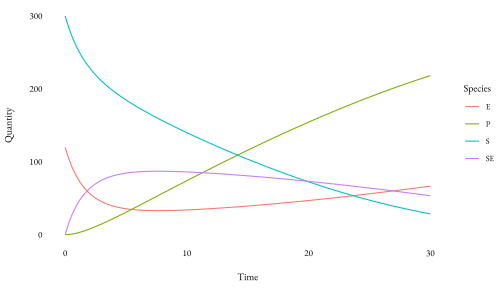

Provides utilities and classes for working with reaction networks in R.
Installation
You can install the development version from GitHub with:
devtools::install_github('dbarrows/bondr')Creating networks
You write systems of reactions using a natural syntax, and bondr will parse it and turn it into an S3 object.
(synthesis <- network('A + B -> C, 2.4e-5'))
#> # Reaction network: 1 reaction x 3 species
#> Reactants Products Rate
#> R1 A + B -> C 2.4e-05Sources / sinks
You can specify sources / sinks using 0 as the species name.
network('0 -> A, 4')
#> # Reaction network: 1 reaction x 1 species
#> Reactants Products Rate
#> R1 0 -> A 4Multiple reactions
Additional reactions can be entered on new lines.
network('
S + E -> SE, 1.66e-3
SE -> E + P, 1e-1
')
#> # Reaction network: 2 reactions x 4 species
#> Reactants Products Rate
#> R1 S + E -> SE 0.00166
#> R2 SE -> E + P 0.1Bidirectional reactions
You can use <-> to indicate bidirectional reactions, with an additional rate specified at the end of the line.
network('A <-> B, 1e-1, 2.2')
#> # Reaction network: 2 reactions x 2 species
#> Reactants Products Rate
#> R1 A -> B 0.1
#> R2 B -> A 2.2Species orders
Prefixing a species name with a number will be interpreted as a reaction coefficient.
net <- network('2A -> B, 1e-1')
str(net$reactions[[1]])
#> List of 3
#> $ reactants:List of 1
#> ..$ :List of 2
#> .. ..$ name : chr "A"
#> .. ..$ order: num 2
#> .. ..- attr(*, "class")= chr "species"
#> $ products :List of 1
#> ..$ :List of 2
#> .. ..$ name : chr "B"
#> .. ..$ order: num 1
#> .. ..- attr(*, "class")= chr "species"
#> $ rate : num 0.1
#> - attr(*, "class")= chr "reaction"Using networks
Propensity functions
You can generate the propensity functions for a reaction network.
net <- network('
A -> B, 2.5
2B + C -> A, 4e-2
')
(props <- propensities(net))
#> [[1]]
#> function (x)
#> {
#> 2.5 * x[1]
#> }
#> <environment: 0x7fec961bd580>
#>
#> [[2]]
#> function (x)
#> {
#> 0.04 * x[2] * (x[2] - 1)/2 * x[3]
#> }
#> <environment: 0x7fec962dd5f0>Note that dimerisations and multiple reactants are handled properly.
Propensity functions take a state vector of species quantities, ordered according to the output of the species function.
Stoichiometric matrix
A matrix that conveys how the system updates when reactions fire. The columns correspond to reactions, and the rows to species.
mm_string <- network_string_examples('mm')
cat(mm_string)
#>
#> S + E <-> SE, 1.66e-3, 1e-4
#> SE -> E + P, 1e-1
(net <- network(mm_string))
#> # Reaction network: 3 reactions x 4 species
#> Reactants Products Rate
#> R1 S + E -> SE 0.00166
#> R2 SE -> S + E 1e-04
#> R3 SE -> E + P 0.1
stmat(net)
#> R1 R2 R3
#> S -1 1 0
#> E -1 1 1
#> SE 1 -1 -1
#> P 0 0 1Solving
bondr also provides a function deriv to get a derivative function compatible with the deSolve R package, which contains a number of numerical integrators.
Using deSolve
Obtaining a deterministic solution to a system as in the Reaction Rate Equation can be done as follows.
library(deSolve)
y <- c(S = 300, E = 120, SE = 0, P = 0)
times <- seq(0, 30, length.out = 100)
func <- deriv(net)
sol <- ode(y, times, func)
head(sol)
#> time S E SE P
#> [1,] 0.0000000 300.0000 120.00000 0.00000 0.0000000
#> [2,] 0.3030303 283.6196 103.87346 16.12654 0.2538657
#> [3,] 0.6060606 270.0844 91.02873 28.97127 0.9443315
#> [4,] 0.9090909 258.6933 80.67784 39.32216 1.9845847
#> [5,] 1.2121212 248.9504 72.25847 47.74153 3.3080324
#> [6,] 1.5151515 240.4961 65.35880 54.64120 4.8626940Plotting
You can then plot the solution using a few tidyverse functions fairly easily.
library(tidyverse)
library(wplot)
sol %>%
data.frame() %>%
rename(Time = time) %>%
pivot_longer(species(net), names_to = 'Species', values_to = 'Quantity') %>%
ggplot(aes(x = Time, y = Quantity, colour = Species)) +
geom_line() +
theme_wc()